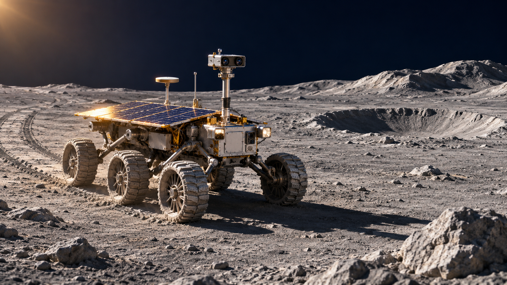

我們的想法
讓好奇心，
找到可以出發的地方。
我們希望孩子能帶著問題靠近科學，在探索中保留自己的猜想，也願意根據新的線索，重新想一想。
- 先問一個「為什麼」
- 從看得見的月亮、太空人的日常開始，讓陌生的宇宙和自己的生活連在一起。
- 在選擇裡，試試自己的想法
- 跟著故事做決定，或替月球車規劃路線。透過結果，看看原本的猜測是否站得住腳。
- 帶著發現，再問下一個問題
- 回顧線索、比較不同做法，把「我覺得」慢慢說成「我觀察到，所以我這樣想」。
今天，想怎麼靠近宇宙？
想讀一個問題、走進一段故事，或準備一堂課，都有適合你的起點。
 可以先從這個問題開始月亮為什麼會變形？
可以先從這個問題開始月亮為什麼會變形？
太空知識
每一個為什麼，
都有線索可以找。
從月球表面、衛星工程，到太空生活與夜空觀察，用一篇文章讀懂一個太空問題。
- 找到你好奇的主題從五類標籤挑選，或輸入「火星」「微重力」等關鍵字。
- 看圖、閱讀，再想一想10 篇科普文章搭配情境插圖，從日常提問走向科學解釋。
科學官米亞「這個亮點，
你想從哪裡開始查？」 分支故事 · 太空現象閉上眼，怎麼還有閃光？
這一次，
你想從哪裡開始查？」 分支故事 · 太空現象閉上眼，怎麼還有閃光？
互動故事
這一次，
由你決定下一幕。
成為見習航員，跟著科學官米亞走進太空。看分鏡、讀對話，你的選擇會帶來不同的情節與線索。
- 先進入情境，再做決定閉眼看見閃光，先檢查艙燈還是儀器？第一次過夜，又該怎麼安排睡袋？
- 回顧你的路線與故事背後的科學到結局看看自己的選擇，也可以重播，試試另一種做法。

月球站，準備出發 月面探索 · 選路與採樣把樣本，和你的發現一起帶回來。太空任務
從一顆星球，
走進一次親手探索。
在互動太陽系點選太陽、八大行星與月球，拉近觀察，帶著這一站的問題尋找線索。
- 點選天體，看看它的樣子閱讀介紹、觀察影像，試著回答探索問題，再打開提示。
- 來到月球，換你駕駛月球車用方向鍵或螢幕按鈕前往採樣點，留意地形與電量，採集樣本後返回基地。

課堂活動預覽
衛星電力收支任務單
班級：＿＿＿ 姓名：＿＿＿
陽光被地球遮住後，
衛星還能工作多久？
教師資源
讓一次探索，
變成一堂好課。
把學生的好奇接回課堂。從觀察、模型到資料判讀，挑選適合班級的教材，陪孩子把想法說清楚。
- 依主題、年齡與關鍵字挑選10 份教材涵蓋國小高年級與國中，可先看活動內容，再安排課堂。
- 準備好材料，就能接著探索提供可編輯 PPTX 範例與可列印學習單；新學習單另附教學流程、教師參考答案和離線下載。
宇宙很大，
從你的一個問題開始就好。
一個人慢慢讀、和家人一起選故事，或在課堂上共同探索。找到你想知道的事，就是出發的第一步。